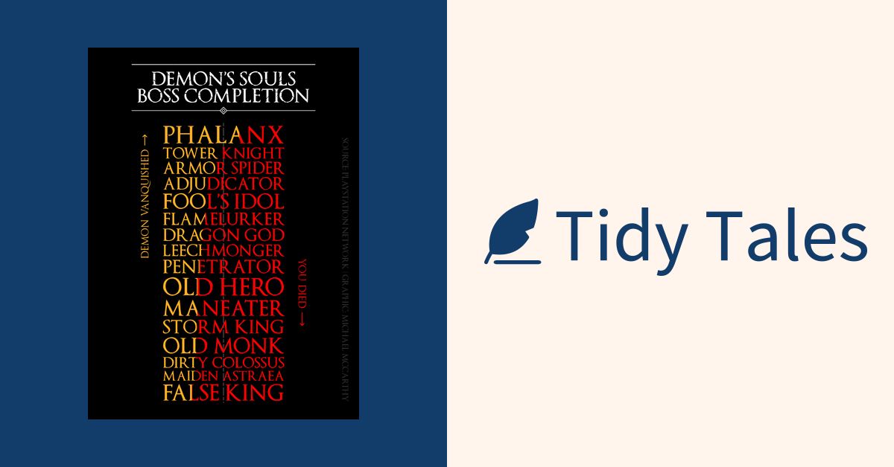
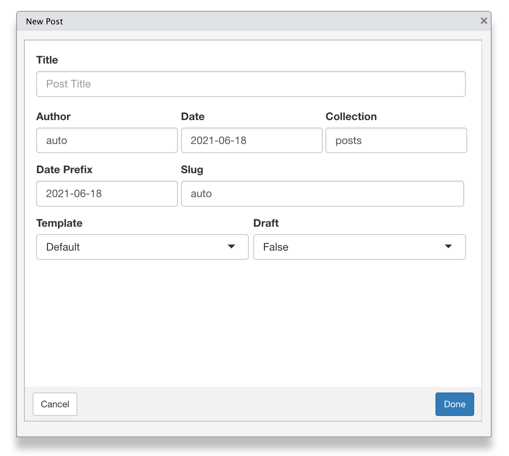

Note: This blog is no longer built with Distill. It is now built with Quarto, which is in many ways a successor to Distill.
Overview
Tidy Tales is built using Distill for R Markdown, a web publishing format optimized for scientific and technical communication. I chose Distill for Tidy Tales over other R website formats for its simplicity and style. My personal website uses blogdown, a more customizable but also more complicated format, which I did not want or need for Tidy Tales. That said, I did encounter some restrictions that I wanted to overcome while customizing Tidy Tales using the tools provided by Distill. This post covers some tips and tricks to get around these restrictions.
Page and Article Metadata
Distill comes equipped with a number of features to automatically enable richer sharing of article links on the web using article metadata. However, some of these features are not available for non-article pages on distill blogs (such as link preview images for the home page), and the automatic behaviour of these features limits how much they can be customized. Both of these limitations can be overcome using the metathis package by Garrick Aden-Buie.
Tom Mock has a great blog post diving into how metadata can be used to customize how links from a distill blog appear on social media. It’s a great resource and I followed it to add metadata and preview images to the home and about pages of Tidy Tales.
Here is what the index.Rmd file for the Tidy Tales home page looks like.
---
title: "Wrangling, Visualizing, Modelling, Communicating data"
site: distill::distill_website
listing: posts
---
```{r, include=FALSE, results='asis'}
library(metathis)
meta() %>%
meta_social(
title = "Tidy Tales",
description = "Wrangling, Visualizing, Modelling, Communicating data",
url = "https://tidytales.ca",
image = "https://tidytales.ca/inst/images/twittercard.png",
image_alt = "Tidy Tales logo",
og_type = "website",
twitter_card_type = "summary",
twitter_site = NULL
)
```When the site is built distill will automatically generate metadata for the home page, and the metathis code in index.Rmd will generate additional metadata for the home page. Here is what it looks like in HTML.
<!-- Generated by distill -->
<meta property="og:title" content="Tidy Tales | Michael McCarthy: Wrangling, Visualizing, Modelling, Communicating data">
<meta property="og:type" content="article">
<meta property="og:locale" content="en_US">
<meta property="og:site_name" content="Tidy Tales | Michael McCarthy">
<meta property="twitter:card" content="summary">
<meta property="twitter:title" content="Tidy Tales | Michael McCarthy: Wrangling, Visualizing, Modelling, Communicating data">
<meta property="twitter:site" content="@propertidytales">
<meta property="twitter:creator" content="@mccarthymg">
<!-- Generated by metathis -->
<meta property="og:locale" content="en_US">
<meta name="twitter:title" content="Tidy Tales">
<meta name="twitter:description" content="Wrangling, Visualizing, Modelling, Communicating data">
<meta name="twitter:url" content="https://tidytales.ca">
<meta name="twitter:image:src" content="https://tidytales.ca/inst/images/twittercard.png">
<meta name="twitter:image:alt" content="Tidy Tales logo">
<meta name="twitter:card" content="summary">
<meta property="og:title" content="Tidy Tales">
<meta property="og:description" content="Wrangling, Visualizing, Modelling, Communicating data">
<meta property="og:url" content="https://tidytales.ca">
<meta property="og:image" content="https://tidytales.ca/inst/images/twittercard.png">
<meta property="og:image:alt" content="Tidy Tales logo">
<meta property="og:type" content="website">There is some overlap between the <meta> tags generated by distill and metathis, however, the metadata tags generated by metathis seem to take precedence over those automatically generated by distill. For example, the Twitter card for the Tidy Tales home page displays “Tidy Tales” as its title, rather than “Tidy Tales | Michael McCarthy: Wrangling, Visualizing, Modelling, Communicating data”.
Article Metadata
The ability to override some of the metadata generated by distill using metathis is hacky, but it also affords more customization for distill blogs. One trick I’m taking full advantage of with this is to have unique preview images between posts on Tidy Tales and their social cards. Distill allows you to specify a preview image for a post using the preview chunk option.
```{r, preview=TRUE}
library(ggplot2)
ggplot(diamonds, aes(carat, price)) +
geom_smooth()
```This preview image will be used alongside post listings and in social cards. However, if a different image is specified in metathis::meta_social() that image will be used in social cards but the preview image specified in the post chunk will still be used alongside post listings. I’m using this on Tidy Tales to have branded images for social cards and plain images for post listings. Here’s an example of the branded social card image from my first post.
Utterances Comments
Distill only supports Disqus comments officially. I did not want to use Disqus comments on Tidy Tales because it would add bloat to my posts, and because I do not want a third-party data mining and tracking Tidy Tales readers. Utterances is a lightweight alternative that uses GitHub issues for comments. Miles McBain shared an HTML script on his blog to add Utterances to a distill blog.
Here is what the script for Tidy Tales looks like.
<script>
document.addEventListener("DOMContentLoaded", function () {
if (!/posts/.test(location.pathname)) {
return;
}
var script = document.createElement("script");
script.src = "https://utteranc.es/client.js";
script.setAttribute("repo", "mccarthy-m-g/tidytales");
script.setAttribute("issue-term", "title");
script.setAttribute("crossorigin", "anonymous");
script.setAttribute("label", "utterances");
script.setAttribute("theme", "github-light");
/* wait for article to load, append script to article element */
var observer = new MutationObserver(function (mutations, observer) {
var article = document.querySelector("details.comment-section");
if (article) {
observer.disconnect();
/* HACK: article scroll */
article.setAttribute("style", "overflow-y: hidden");
article.appendChild(script);
}
});
observer.observe(document.body, { childList: true });
});
</script>The script uses JavaScript to inject the Utterances <iframe> into the end of the first HTML Element within the document that matches the CSS selector specified in document.querySelector(). By default, the script shared by Miles will place the comment section at the end of a distill post’s body. Since Utterances comments sections are not collapsible this presents a problem though, as more comments are made readers will have to scroll further and further to reach a post’s appendix.
To overcome this on Tidy Tales I created new CSS selectors that use the <details> tag, so readers can show and hide the comments section as they please, and added a brightness and opacity filter to the selector for the Utterances <iframe> to make it fit into the Tidy Tales colour scheme better. I also wanted my comments section to be in the appendix of my posts rather than the body.
d-appendix details.comment-section {
color: var(--dark-shade-alpha);
font-family: var(--heading-font);
font-size: 15px !important;
}
d-appendix details.comment-section summary:after {
content: "Show";
}
d-appendix details[open].comment-section summary:after {
content: "Hide";
}
.utterances {
filter: brightness(95%) opacity(85%);
}The above HTML and CSS is applied to all Tidy Tales posts using the theme and includes parameters in _site.yml, so to add Utterances to a post I only need to include the following in the R Markdown file for a post as an appendix header.
## Comments {.appendix}
<details open class="comment-section">
<summary>
</summary>
</details>Post Templates
Finally, and most importantly, I am using an R Markdown template for new Tidy Tales posts so I don’t need to copy and paste all of my customizations into the YAML and body of every post I create. This is easily done using the create_post_from_template() function in the distilltools package by Ella Kaye. And it will be even easier after the Pull Request I’m working on with Ella adds an RStudio addin for creating new posts from a template to the package.
Ella also created the awesome Distill Club hex sticker I used for this post’s preview image.

Community Tips and Tricks
Distill has a great community of users supporting each other to build and customize their sites. John Paul Helveston has put together the Distillery—a distill blog about building distill websites and blogs—to collect tips and tricks from the community and to showcase their distill websites and blogs. Check it out if you’re thinking of joining the Distill Club!

Michael McCarthy
Thanks for reading! I’m Michael, the voice behind Tidy Tales. I am an award winning data scientist and R programmer with the skills and experience to help you solve the problems you care about. You can learn more about me, my consulting services, and my other projects on my personal website.
Session Info
─ Session info ───────────────────────────────────────────────────────────────
setting value
version R version 4.2.2 (2022-10-31)
os macOS Mojave 10.14.6
system x86_64, darwin17.0
ui X11
language (EN)
collate en_CA.UTF-8
ctype en_CA.UTF-8
tz America/Vancouver
date 2022-12-21
pandoc 2.14.0.3 @ /Applications/RStudio.app/Contents/MacOS/pandoc/ (via rmarkdown)
quarto 1.2.280 @ /usr/local/bin/quarto
─ Packages ───────────────────────────────────────────────────────────────────
package * version date (UTC) lib source
here * 1.0.1 2020-12-13 [1] CRAN (R 4.2.0)
sessioninfo * 1.2.2 2021-12-06 [1] CRAN (R 4.2.0)
[1] /Users/Michael/Library/R/x86_64/4.2/library/__tidytales
[2] /Library/Frameworks/R.framework/Versions/4.2/Resources/library
──────────────────────────────────────────────────────────────────────────────Citation
BibTeX citation:
@online{mccarthy2021,
author = {Michael McCarthy},
title = {What’s He Building in There?},
date = {2021-06-19},
url = {https://tidytales.ca/posts/2021-06-19_distill},
langid = {en}
}
For attribution, please cite this work as:
Michael McCarthy. (2021, June 19). What’s he building in there?
https://tidytales.ca/posts/2021-06-19_distill
Comments